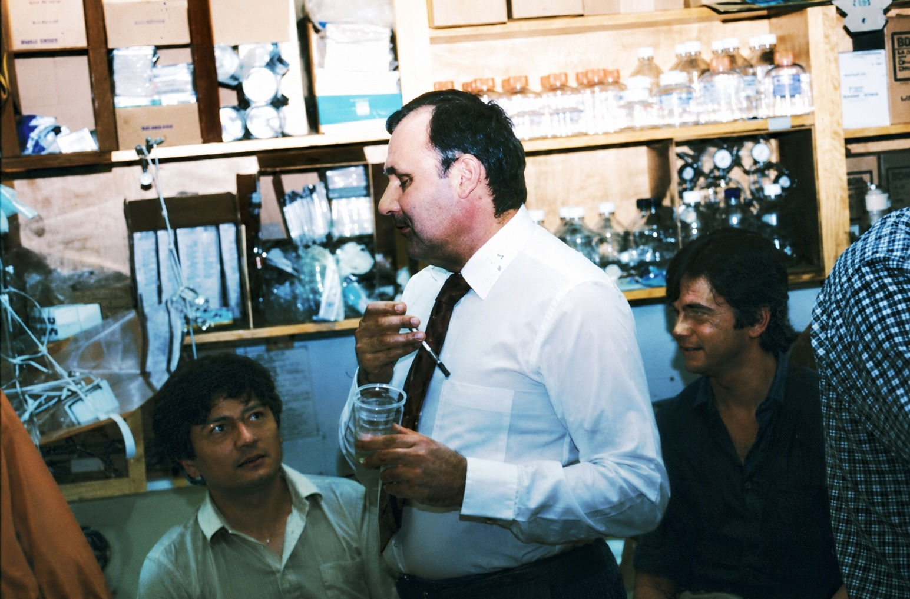

Cancer Research Institute.
ab 1984
Als ich 1984 in Denis Gospodarowicz' Labor kam, war er bereits eine Berühmtheit. Er hatte den Fibroblastenwachstumsfaktor FGF entdeckt und gehörte zu den führenden Wissenschaftlern auf diesem Gebiet. Seine Arbeiten wurden weltweit gelesen und zitiert. Für mich war er deshalb die erste Adresse, als ich ein Labor für meinen Forschungsaufenthalt in den USA suchte.
Denis war zweifellos einer der kreativsten Wissenschaftler, die ich jemals kennengelernt habe. Von ihm lernte ich etwas, das meine eigene wissenschaftliche Arbeit dauerhaft beeinflusst hat. Während ich dazu neigte, kompliziert zu denken und Experimente mit möglichst vielen Variablen zu planen, dachte Denis genau umgekehrt. Eine einfache Hypothese. Ein einfaches Experiment. Klare Antwort. Dann das nächste Experiment. Keine Ehrfurcht vor eigenen Ideen. Keine langen Diskussionen. Wenn etwas nicht funktionierte, wurde es verworfen.
Auch Manuskripte schrieb er nach diesem Prinzip. Schnell, pragmatisch und effizient. Tagsüber kritzelte er seine Texte handschriftlich auf Papier, schnippelte Texstellen aus und fügte das Gesamtwerk anschließend mit Heftklammern zusammen. Das Ergebnis wies für mich leichte Ähnlichkeit aufmit einem abstrakten Kunstwerk. Über Nacht tippte eine Sekretärin alles ab. Computer standen zwar bereits im Labor, aber Denis hielt nicht viel davon. Einmal zeigte er mir die Einleitung einer Publikation über den Transforming Growth Factor-ß, kurz TGF-ß. Er hatte das Kürzel TGF-ß überall mit dem Kugelschreiber durchgestrichen und durch FGF ersetzt. Die Einleitung war fertig. Denis - Meister der wissenschaftlichen Ökonomie.
Sein Englisch war dagegen ausbaufähig. Er sprach eine Mischung aus Französisch-Englisch und gelegentlich Deutsch. Eines Tages stand er neben mir und sagte:
„Lothaaar, wötsch ööt för se Böbbeel!“
Ich verstand kein Wort.
Er wiederholte.
„Lothaaar, se Böbbeel!“
Wieder nichts.
Erst nach mehreren Anläufen begriff ich, was er meinte:
„Lothar, watch out for the bubbles!“
Ich sollte beim Wechseln des Nährmediums vorsichtig sein und keine Luftblasen erzeugen, weil dadurch Keime in die Zellkultur gelangen konnten. Wenn er zufrieden war, wechselte er ins Französisch-Deutsch.
„Lothaaar, Gutaarbaait!“
Das fand er selbst ausgesprochen komisch.

Denis war aber nicht nur kreativ. Er war auch extrem ehrgeizig. Wissenschaft war für ihn kein Mannschaftssport, sondern Wettkampf. Besonders wenig hielt er von seinen Konkurrenten. Sein Lieblingsfeind war Tom Maciag in Harvard. Kaum ein Gespräch verging, ohne dass Denis erklärte, weshalb Maciag falsche Ergebnisse publiziere und eigentlich keine Ahnung habe. Solange Denis gewann, war alles gut. Schwieriger wurde es, wenn andere erfolgreich wurden. Das bekam später auch Napoleone Ferrara zu spüren.
Als Napo in unser Labor kam, hielt Denis nicht besonders viel von ihm. Napo war freundlich, bescheiden und arbeitete an einem Projekt, das zunächst wenig spektakulär wirkte. Denis betrachtete ihn eher als nützlichen Mitarbeiter. Doch als sich abzeichnete, dass Napo möglicherweise einen völlig neuen Wachstumsfaktor (VEGF) entdeckt hatte, änderte sich die Situation. Plötzlich ging es nicht mehr um eine Nebenbeobachtung. Plötzlich ging es um etwas Großes. Und Denis wollte bei großen Entdeckungen immer auf der richtigen Seite stehen. Das Verhältnis zwischen beiden verschlechterte sich zunehmend. Aus Kollegen wurden Gegner. Damals verstand ich vieles davon noch nicht.
Eines Tages entdeckte ich im Anzeigenteil von „Nature“ eine kleine Anzeige. Dort wurde gereinigter FGF zum Verkauf angeboten. Anbieter war eine mir unbekannte FGF Company. Eine Adresse fehlte. Angegeben war lediglich eine Telefonnummer mit der Vorwahl von San Francisco. Ich zeigte Denis die Anzeige und fragte, wer dahinterstecke. Er reagierte leicht gereizt und meinte nur, ich solle mich nicht darum kümmern. Ich vergaß die Geschichte zunächst wieder.
Erst Jahre später, nach meiner Rückkehr nach Deutschland, erfuhr ich von Gera mehr über die Vorgänge. Das Labor war inzwischen geschlossen und streng kontrolliert worden. Offenbar ging es um den Verkauf von FGF, das mit öffentlichen Forschungsmitteln hergestellt worden war. Welche Rolle die FGF Company, die Universitätsleitung und die Konflikte um VEGF genau spielten, habe ich nie vollständig verstanden. Klar war nur: Die Karriere von Denis an der UCSF war beendet.
Ironischerweise wird sein Name heute in vielen Erzählungen über VEGF kaum erwähnt. Wer Interviews mit Napoleone Ferrara liest, könnte leicht glauben, die Geschichte habe erst mit VEGF begonnen. Das stimmt nur teilweise. Die Methoden, die Denkweise und das wissenschaftliche Umfeld, in dem VEGF entdeckt wurde, entstanden nicht im luftleeren Raum. Sie entstanden in Denis' Labor. Das macht die späteren Ereignisse nicht besser. Aber es gehört zur Wahrheit dazu.
Denis war kein einfacher Mensch. Er konnte großzügig sein, inspirierend und brillant. Er konnte aber ebenso opportunistisch, besitzergreifend und neidisch sein. Vermutlich lagen seine größten Stärken und seine größten Schwächen dicht beieinander. Ich mochte ihn trotzdem.
Vielleicht weil er einer der wenigen Menschen war, die gleichzeitig ein wissenschaftliches Genie und ein ziemlicher Chaot sein konnten. Wenn ich heute an ihn denke, höre ich immer noch seine Stimme:
„Lothaaar, Gutaarbaait!“